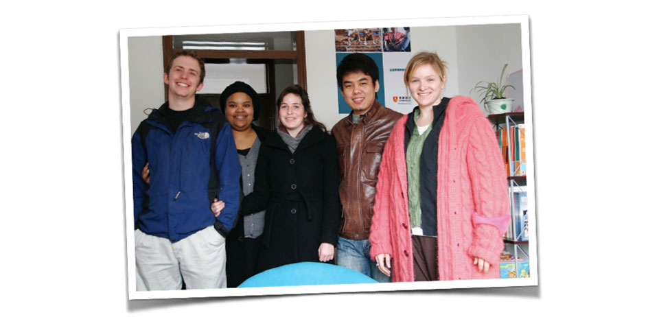
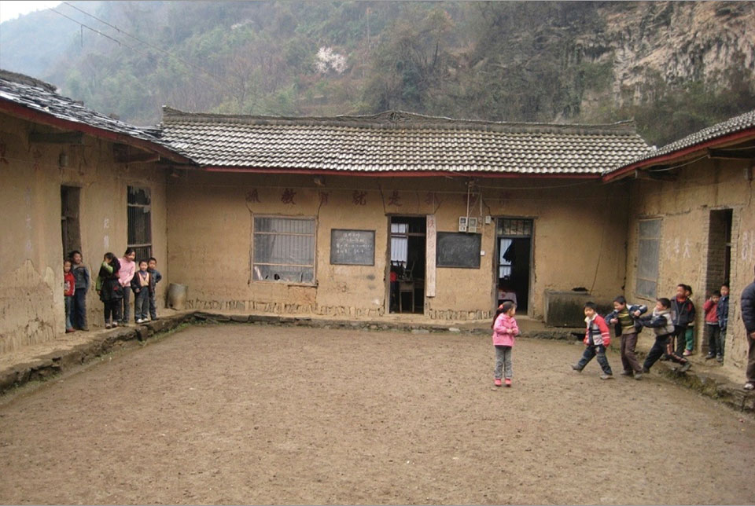
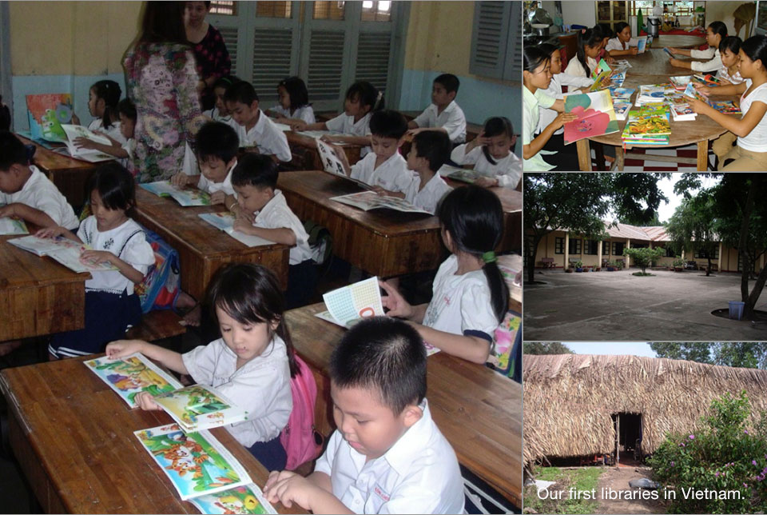

Our Story
My name is Tom Stader and I’m the Founder of The Library Project. This is our organization’s story, through my eyes.
A Simple Idea (2006)
A Simple Idea
A simple idea. A few friends. Nine libraries.
The seeds of The Library Project were planted in 2006 with five friends who wanted to make a difference in the lives of children living in an orphanage and children’s shelter in Dalian, China. I had been volunteering on weekends at the orphanage tutoring some of the children on their English language studies. These were good kids. I also knew the headmaster personally, and was absolutely confident that whatever we decided to do would be appreciated.

We soon came up with a plan. Our simple idea was to donate a library of books to each location. Soon after, we held a used book drive at six Aston English Schools (a local educator that we were working at) in hopes of collecting a couple hundred books for each orphanage. After just one week, we had collected over 3,000 children’s books which far exceeded our expectations.
Our next step was to reach out to our friends and family who helped us to raise $500 to purchase tables, chairs, bookshelves, globes, lighting, and plants for the two small libraries. Two months later, both the Dalian Children’s Orphanage and the Dalian Children’s Shelter received beautiful new libraries that the children could enjoy daily. In both cases these tiny libraries were the brightest and most exciting room the children had to hang out in, read, and do their homework. At both locations the administration promised to keep the rooms open and well maintained. We were thrilled.
.jpg)
At the end of 2007 I received an email that would change my life. It was from Kevin Kruse, a serial entrepreneur from the USA, who heard about our small venture and expressed his interest in donating a substantial amount of money. He understood that this simple idea had potential to grow into something with a real potential to impact children’s literacy on a much larger scale than I had previously thought. Like all things, there were strings attached to this potential donation. Firstly, he wanted us to use his funds not to donate libraries, but to create a “real” organization. Secondly, he wanted us to develop clear and solid programs. And finally, to my own surprise, I needed to quit my job and work on The Library Project full time.
The last requirement was a tall order. I had a good job and was quite comfortable and going full time on a charitable start-up would take me out of my comfort zone completely. With that said, I also recognized this was a once in a life-time opportunity. Offers like this do not come around every day.
Soon after receiving Kevin’s offer, I quit my job and dedicated myself 100% to what would become The Library Project.
Finding Our Way (2007-2008)
Founding an organization. Back to China. Twenty-four libraries.
The first thing I did was create a small Board of Directors composed of close friends. This group was a big help with budgeting, legal matters and governance; three things I knew very little about. They also were composed predominantly of entrepreneurs, people who understood what it meant to build companies and knew the questions to ask. Without this group I would have been lost.
The next few months were a whirlwind of activity. I remember sitting in a coffee shop in Bangkok with a few members of our Board trying to come up with a name for our organization. Hours later we hit on “The Library Project.” We soon purchased the website address, went to a restaurant for dinner, and celebrated the creation of our organization.
We were then offered a free office in Xi’an, China. We had very little money left, so a free office was too much to pass up. That month I packed up my things in Vietnam, boarded a plane, and found myself moving to Xi’an. We then hired our first employee and began looking for schools that were in need of library donations.

What we found was surprising; the primary schools we were visiting had huge libraries. Thousands of books, but these books were largely useless. For example, the books we found were very old and not age appropriate for the children in attendance.
Also, these libraries were behind lock and key, with children not allowed access to the few books what were age appropriate.
So, why did these schools have libraries that were largely useless? It’s quite simple. Each school had a quota for the number of books that should be found in their library based on their student number. For example, ten books per student.
This was largely an arbitrary number that changed from school to school. This expectation put the administration at these schools in a difficult position. They needed to comply with local government regulations, but they also had to balance their already underfunded school budgets. Because of that, the administration went out and purchased the cheapest books they could find, locked the door to the library, and walked away.
With this information we saw a clear need for quality age appropriate children’s books in these schools that the children could actually read.
In March we found ourselves five hours outside of Xi’an, on top of a mountain, standing in a school that had the kind of need we were all looking to support. The Liu Lin Primary School was a mud and brick building with 60 students and eight teachers.
Within five minutes of being there and seeing the shape the school was in, I had promised the Principal that we would return with a library. How we would actually do that was still unknown.
I remember walking through the school being overwhelmed by two opposing feelings; happiness and anger. Happiness because we had found a school that we absolutely knew we could make an impact in; the children would definitely benefit from a library donation. Anger because this school was beyond anything I could have ever imagined still existing in 2009.
People talk about this “divide between rich and poor.” This idea that there is an arbitrary line that divides our world in two. People talk about it like it’s this crack in the road that someone can simply step over if they work hard. I remember standing in this school thinking about how we have all been lied to. There wasn’t a divide between the rich and poor; there was a canyon.
My final thought was how unbelievably over my head I was. I had very little money, two employees to somehow pay at the end of the month, and I’d just promised these people a library.
